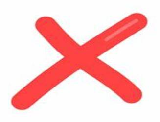

Digital Marketing is a free online advertising. You can create and showcase your advertisements of your business digitally. During this pandemic, it will be a big help to spread the word about your business with digital marketing. But first, here are some pros and cons you might consider thinking before entering the world of digital marketing.
Pros:
- Cost-free - every advertisement is done online through posts or emails without paying anything. Safe from the traditional print advertisements and other methods because it's much cheaper.
- Wide Reach - with the help Internet, you can reach a wide audience for your business. There are no geographical barriers and, you can easily spread your business worldwide.
- Personalized Content and Ads - great thing about Digital Marketing is that you can create personalized contents. It makes you easily connected with your audience. You'll be able to distinguish their likes and dislikes to market your product/service effectively.
- Measurable Results - with web analytics and other metric tools, you can easily measure the effectiveness and efficiency of your digital marketing strategies. Make quick changes to your strategies and campaigns to make it more interesting to your targeted audience.
- Accessible - the Internet allows more people to access and learn about your business. The continuous growth of technology makes Digital Marketing more effective compared to the traditional marketing methods.
 Cons:
- Time Consuming - Digital Marketing requires more time and effort to assure your online presence and authenticity to you audience. There's a need to research and learn about your targeted audience to keep them engaged to you business regularly.
- High Competition - aside from the fact that you reach wide audience in Digital Marketing, you also need to compete globally. Sometimes, other competitors might copy and use the same advertisements you've done. There are a lot of entrepreneurs who also build their social profiles online and you need to be strategic about your advertisements to keep your audience incline with your business.
- Issues about Security and Privacy - Internet might be somehow dangerous and so a lot of legal considerations in collecting and using customer data for digital marketing purposes were being followed. Be sure to comply to the rules regarding privacy and data protection.
- Internet Limitations - there are some part of the world that don't have access to the Internet. Some people who might be valuable customers but can't afford to have an access on the Internet.
- Complaints and Feedback - there will always come a time that you will receive a negative feedback or criticism about your brand. Since your audience can also see it, make it a habit to respond and solve problems like that to avoid damage on your business reputation.
Indeed, there are a lot of factors you need to know and think about Digital Marketing. Be smart enough of your strategies and campaigns if you're going to pursue Digital Marketing for your business.